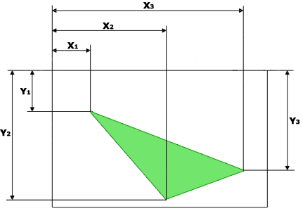

Определение координат для прямоугольника (shape="rect"):

Определение координат для окружности (shape="circle"):

Определение координат для многоугольника (shape="poly"):

<area>Тег поддерживается следующими браузерами: Edge, Internet Explorer, Firefox, Chrome, Opera, Safari.
HTML тег определяет активные области на изображении, которые являются ссылками, эти области могут
отличаться формой и размером. Картинка (изображение) с активными областями, называется картой-изображением.
Такая картинка ничем не отличается от обычной, за исключением того, что содержит активные области (ссылки).
Области могут перекрывать друг друга, сверху окажется та, которая в коде располагается первее (выше).
Элемент <area> используется только совместно с
тегом <map> в качестве его дочернего элемента.
Определяет альтернативный текст, который будет виден вместо изображения, если оно не может быть отображено (из-за медленной связи, ошибки в атрибуте src и тд).
Атрибут coords указывает координаты активной области на карте-изображения. Он используется вместе с атрибутом shape для указания размера, формы и размещения активной области. Возможные значения атрибута:
Примечание: координаты верхнего левого угла области - 0,0.
Атрибут href указывает адрес страницы, на которую ведет ссылка с активной области изображения, если он не указан или пропущен, то тег не будет являться гиперссылкой. (адрес может быть либо абсолютным либо относительным)
Указывает двухбуквенный код языка, определяющий язык страницы, доступной по ссылке. Используется только совместно с атрибутом href и имеет исключительно информативный характер.
Атрибут media определяет тип документа, на который ведет ссылка или указывает, тип устройства, для которого предназначается ссылка (пример: мобильный телефон, принтер и тд.). Атрибут может принимать несколько значений и используется только совместно с атрибутом href.
Атрибут rel определяет отношение между текущим документом и связанным. Возможные значения атрибута:
Атрибут rel используется только совместно с атрибутом href.
Атрибут shape указывает форму области. Он используется совместно с атрибутом coords для указания размера, формы и размещения активной области. Возможные значения атрибута:
Атрибут target определяет, где будет открыт документ, при переходе по ссылке. Используется только вместе с атрибутом href. Возможные значения атрибута:
Атрибут type указывает MIME-тип (спецификация форматирования сообщений и кодирования информации для передачи по интернету) документа, на который ведет ссылка. Используется только совместно с атрибутом href.
Примечание: атрибут usemap в теге <img> связан с атрибутом name элемента
<map>, и создает связь между картинкой и картой..
<!DOCTYPE html><html><body><p>Кликните на солнце или на одну из планет, чтобы посмотреть их поближе:<p><img src="planets.gif" width="146" height="126" alt="Планеты" usemap="#planetmap"><map name="planetmap"><area shape="rect" coords="0,0,82,126" alt="Солнце" href="sun.gif" type="image/gif"><area shape="circle" coords="90,58,3" alt="Меркурий" href="merglobe.gif" type="image/gif"><area shape="circle" coords="124,58,8" alt="Венера" href="venglobe.gif" type="image/gif"></map></body></html>Кликните на солнце или на одну из планет, чтобы посмотреть их поближе: